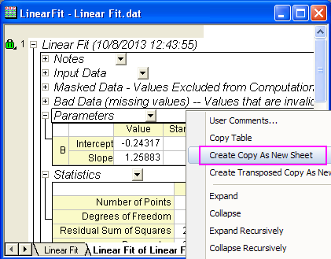
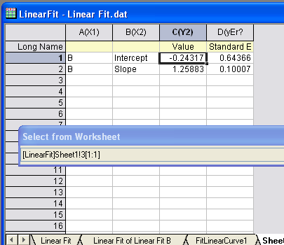
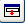
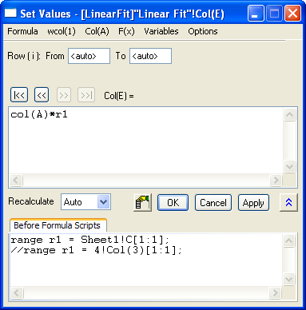

FAQ-498 Wie verwende ich das Analyseergebnis im Dialog Werte setzen?
Letztes Update: 04.02.2015
use-link-cell-SCV-dlg
Origin erzeugt Tabellen in einem hierarchisch strukturierten Ergebnisblatt, um die Parameterwerte und weitere Informationen übersichtlich aufzuführen.
Um auf diese Parameterwerte aus den Tabellen zu verweisen und sie im Dialog Werte setzen zu verwenden:
- Klicken Sie mit der rechten Maustaste auf den Kopf der Ergebnistabelle (z.B. Parameter) und wählen Sie Eine Kopie als neues Blatt erstellen, um ein neues Ergebnisblatt mit den Analyseergebnissen aus dieser Tabelle zu erzeugen.
- 
- Öffnen Sie den Dialog Werte setzen für die gewünschte Spalte (klicken Sie mit der rechten Maustaste und wählen Sie Spaltenwerte errechnen).
- Wählen Sie im Dialog Werte setzen im Menü Variablen: Bereichsvariable durch Auswahl einfügen. Der Dialog Aus Arbeitsblatt wählen wird geöffnet.
- Wechseln Sie zu dem neu erstellten Ergebnisblatt und markieren Sie die Zelle des Werts, den Sie verwenden möchten, zum Beispiel den Schnittpunkt mit der Y-Achse:
- 
- Klicken Sie auf , um die Auswahl zu bestätigen, und kehren Sie zum Dialog Werte setzen zurück. Sie können sehen, dass im Bedienfeld Skript vor Anwenden der Formel die Variable r1 für die Zelle des Schnittpunkts mit der Y-Achse definiert ist. Sie können dann direkt r1 in der Formel verwenden.
- 
Wenn sich die Eingabedaten ändern, werden das Anpassungsergebnis und die Spaltenformel aktualisiert, um die Änderung wiederzugeben.
Origin-Version mind. erforderlich: 9.1 SR0
Schlüsselwörter: anpassen, Parameter, Formel